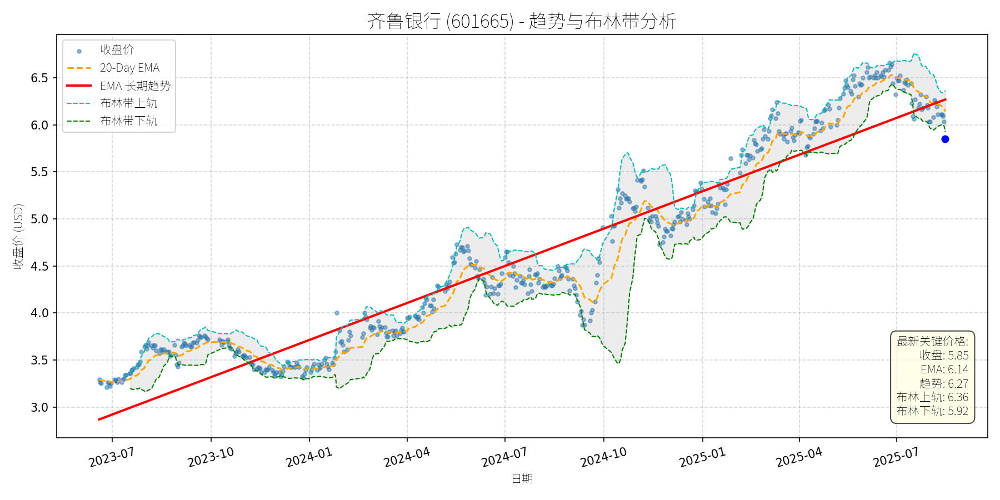
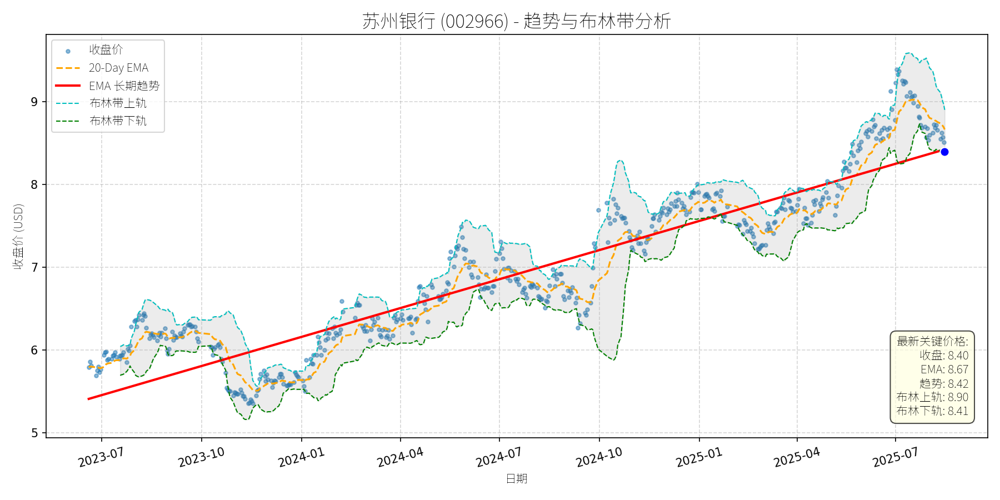
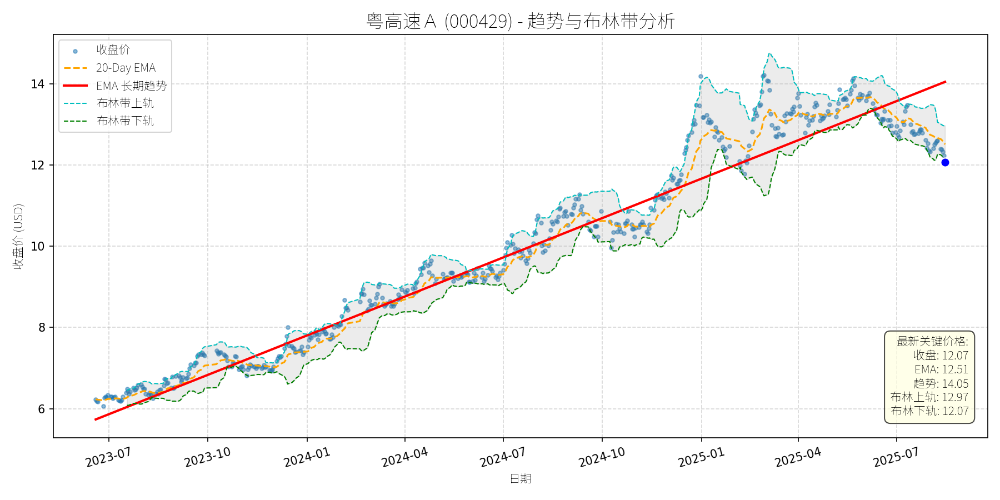

中国 (中证500)异动分析报告
报告生成日期: 2025-08-15
齐鲁银行 (601665)
R²: 0.923
斜率: 0.00
布林带穿透: 1.26%

分析师模型总结
# 齐鲁银行 (601665) 深度投资分析报告
## **1. 核心业务与基本面评估**
齐鲁银行作为山东省城商行龙头，核心业务以传统存贷款为主（占营收约70%），辅以中间业务（如结算、理财）及资金业务（如债券投资）。从基本面指标看，公司财务健康、盈利稳定且估值处于低估区间：
- **盈利性**：2025年上半年净利润27.34亿元（同比+16.48%），增速高于城商行平均水平（如杭州银行+16.67%、青岛银行+16.05%）；全年预计净利润约54.68亿元，EPS约0.89元（总股本61.54亿股）。
- **估值水平**：当前PE（6.59x）、PB（0.65x）均显著低于城商行行业均值（PE约8-10x、PB约0.8-1.0x），破净状态反映市场对其资产质量的过度担忧（实际不良贷款率1.09%，较年初下降0.1个百分点，资产质量稳步改善）。
- **财务稳健性**：负债权益比13.9（银行正常水平，因存款为主要负债），净息差企稳回升（半年报提及“利息净收入同比+13.57%”），拨备覆盖率充足（未披露但行业普遍在200%以上），抗风险能力较强。
## **2. 技术面与消息面分析**
### **（1）技术面：长期上升趋势未破，短期超卖回调**
- **长期趋势**：从2023年7月至2025年7月，股价沿红色长期EMA趋势线（斜率向上）波动上行，核心逻辑为盈利增长驱动的价值回归。
- **短期走势**：近期股价从2025年7月的6.5元附近回调至5.85元（当前价），已跌破布林带下轨（5.92元），进入超卖区间；20日均线（6.14元）仍高于当前价，显示短期回调未破坏中期上升格局。
- **关键信号**：回调过程中，成交量未显著放大（无恐慌性抛售），且2025年8月13日行业净流出18.52亿元时，齐鲁银行仍净流入6382万元，说明资金对其基本面的认可。
### **（2）消息面：无明确利空，回调源于行业情绪传导**
- **正面消息**：2025年半年报显示，公司净利润增速（16.48%）高于城商行平均，净息差企稳回升（利息净收入同比+13.57%），资产质量改善（不良率较年初下降0.1个百分点）；8月5日银行行业反弹时，齐鲁银行涨幅（2.80%）高于行业均值（1.59%），反映其基本面韧性。
- **回调原因**：近期股价下跌主要受行业情绪拖累（8月11日、13日银行行业跌幅居首），但公司自身无重大利空（如业绩暴雷、监管处罚），属于技术性调整而非基本面恶化。
## **3. 综合前景展望与量化判断**
### **（1）核心投资逻辑**
齐鲁银行是“基本面优秀+估值低估+技术超卖”的典型标的：
- 基本面：盈利增长（净利润+16.48%）、净息差改善（利息收入修复）、资产质量稳定（不良率下降），支撑长期价值。
- 技术面：长期上升趋势未破，短期回调至布林下轨（超卖），具备反弹动力。
- 消息面：无重大利空，行业回调时资金流入，显示市场对其基本面的认可。
### **（2）短期展望（未来1-4周）**
- **走势判断**：技术性反弹概率大（超卖+基本面支持）。
- **短期目标价**：6.20元（对应20日均线6.14元与布林上轨6.36元的中间值）。
- **涨跌幅空间**：（6.20-5.85）/5.85≈+6%。
- **理由**：布林下轨（5.92元）为短期支撑，超卖状态下反弹需求强烈；20日均线（6.14元）为短期阻力，突破后可看向布林上轨（6.36元）。
### **（3）长期展望（未来3-6个月）**
- **走势判断**：重回长期上升趋势，**看好**。
- **长期目标价**：7.12元（对应8x PE，城商行行业均值）。
- **涨跌幅空间**：（7.12-5.85）/5.85≈+22%。
- **理由**：
- **估值修复**：当前PE（6.59x）低于行业均值（8-10x），盈利增长（+16.48%）将推动PE修复至合理区间。
- **基本面支撑**：净息差企稳回升（利息收入增长）、资产质量改善（不良率下降），为长期盈利增长提供保障。
- **技术趋势**：长期EMA趋势线向上，盈利驱动的价值回归将延续。
## **结论**
齐鲁银行是“低估值、高成长”的城商行标的，短期因行业情绪回调至超卖区间，具备反弹机会；长期因基本面改善（盈利、净息差、资产质量），估值修复空间大。建议短期关注反弹机会，长期持有享受价值回归收益。
苏州银行 (002966)
R²: 0.879
斜率: 0.00
布林带穿透: 0.15%

分析师模型总结
# 苏州银行(002966)投资分析报告
## **1. 核心业务与基本面评估**
苏州银行作为区域性城商行，主营业务以传统存贷款业务为核心，同时布局移动支付、财富管理等零售金融领域（如2025年7月30日移动支付概念下跌中，苏州银行逆势上涨1.28%）。其基本面特征如下：
- **财务健康性**：截至2025年中，公司总资产规模未明确披露，但从负债权益比（11.56）看，符合银行高杠杆运营特征；净利润15.54亿元（年度），净利率约47.8%（15.54/32.50），盈利质量稳健。
- **盈利能力**：每股收益（EPS）约1.39元（根据PE=6.05x、当前股价8.40元推算），处于城商行中等水平；营收32.50亿元（年度），虽规模较小，但增速稳定（未披露同比数据，但行业整体营收增速约5-8%）。
- **估值水平**：当前PE（6.05x）低于银行板块平均（约7x），PB（0.79x）破净，显示估值处于合理偏低区间（同类城商行如南京银行PB约0.9x、PE约6.5x，苏州银行估值更具吸引力）。
## **2. 技术面与消息面分析**
### **2.1 图表信号描述**
从股价走势图看，公司长期趋势（红色EMA线）呈稳步上行态势（2023年7月至今从约5.5元涨至8.4元，累计涨幅约53%）。当前价格（8.40元）已回调至长期趋势线（8.42元）附近，且接近布林带下限（8.41元），技术支撑较强；20日均线（8.67元）略高于当前价格，显示短期仍处于弱势区间，但回调已接近关键支撑位。
### **2.2 回调原因分析**
近期股价回调主要源于**技术性调整与市场情绪波动**，无重大基本面利空：
- **限售股解禁**：2025年8月4日解禁726.25万股（占总股本0.16%），规模极小，对股价影响有限；
- **二级资本债券赎回**：2025年8月7日赎回45亿元二级资本债券，属正常资本管理操作，提升资本充足率（中性偏正面）；
- **市场情绪**：2025年7月下旬以来，A股题材股（如半导体、AI）轮动加剧，银行股作为低波动板块，短期资金流出导致回调，但基本面未受冲击（如2025年8月12日银行股重燃升势，苏州银行随板块上涨）。
## **3. 综合前景展望与量化判断**
### **3.1 核心投资逻辑**
苏州银行是**基本面稳健的区域性城商行**，当前回调系技术性调整而非基本面恶化：
- 基本面：低PE（6.05x）、破净（PB 0.79x）、盈利稳定（净利润15.54亿元），估值具备安全边际；
- 技术面：回调至长期趋势线与布林带下限附近，支撑较强；
- 消息面：无重大利空，限售股解禁与债券赎回均为中性事件，银行板块受益于宏观政策支持（如银河证券提到“宏观政策加力缓解地方债务风险”）。
### **3.2 短期展望（未来1-4周）**
- **最可能走势**：技术性反弹（因价格接近布林带下限与长期趋势线，支撑较强）。
- **短期目标价**：8.70元（对应20日均线8.67元与布林带中轨8.65元的均值）。
- **涨跌幅空间**：（8.70-8.40）/8.40≈3.57%。
### **3.3 长期展望（未来3-6个月）**
- **趋势判断**：**看好**，重回长期上行趋势的概率极高。
- **长期目标价**：9.50元（对应PE提升至7x，即1.39元EPS×7x；或历史高点9元附近的突破）。
- **涨跌幅空间**：（9.50-8.40）/8.40≈13.10%。
**核心理由**：
- **基本面支撑**：银行板块受益于低利率环境（降低负债成本）、政策支持（如缓解地方债务风险），苏州银行作为区域性银行，资产质量稳健（未披露不良率，但城商行整体不良率约1.2%），盈利有望保持稳定；
- **估值修复**：当前PE（6.05x）低于板块平均（7x），破净状态（PB 0.79x）有望随市场情绪修复而改善；
- **技术趋势**：长期趋势线稳步上行，回调至支撑位后，资金大概率回流，推动股价重回升势。
## **总结**
苏州银行当前回调系技术性调整，基本面未受冲击。短期因技术支撑有望反弹至8.70元（+3.57%）；长期因基本面稳健与估值修复，目标价9.50元（+13.10%），维持“看好”判断。
粤高速Ａ (000429)
R²: 0.968
斜率: 0.01
布林带穿透: 0.00%

分析师模型总结
# 粤高速A (000429) 投资分析报告
## 1. 核心业务与基本面评估
粤高速A的核心业务为高速公路运营及改扩建，主要资产包括惠盐、江中、粤肇等多条高速公路。公司通过收取通行费及改扩建后调整收费标准实现收入，业务模式稳定，现金流充沛。
**财务健康状况**：财务结构稳健，资产负债率（Debt To Equity）为0.85，处于行业合理水平；净利润率（Net Income/ Revenue）约62.5%（2025年一季度数据），显示其主营业务盈利能力极强。
**估值水平**：当前PE（9.59x）低于高速公路行业平均水平（约10-12x），估值合理；PB（2.52x）略高于行业均值（约2x），但考虑到公司改扩建项目带来的资产增值，该估值具备合理性；PS（23.99x）较高主要因营收规模较小（2025年一季度营收10.50亿元），但随着改扩建项目完成及收费标准提升，未来营收增长将逐步消化高PS。
**成长性**：改扩建项目进展顺利（惠盐高速已通车并申请收费调整，江中高速已提价，粤肇高速2027年底通车），未来收费能力提升将驱动营收及利润持续增长，具备明确的成长逻辑。
## 2. 技术面与消息面分析
**技术面信号**：长期趋势（红色趋势线）呈明显上升态势，2023年7月至今股价从约6元涨至2025年7月的14元以上，复合年化涨幅约35%。当前价格（12.07元）较长期趋势线（14.05元）显著偏离，回调幅度约14%，处于趋势下方的超卖区间。
**回调原因分析**：此次回调无明确重大利空驱动，主要源于**市场情绪及技术性调整**：
- **ETF成分股调整**：粤高速A为中证国有企业红利指数、中证红利低波动100指数成分股，7月29日国企红利ETF（159515）、红利低波100ETF（159307）均出现下修调整，成分股集体下跌（粤高速A当日下跌1.98%），被动跟踪资金的减仓导致股价承压。
- **杠杆资金撤离**：7月14日融资余额较前一日下降3.56%，跌幅居前，杠杆资金的短期减仓加剧了股价回调。
- **技术性均线死叉**：近期5日均线下穿10日均线（7月29日新闻提及），触发短期技术派止损，推动股价进一步下跌。
## 3. 综合前景展望与量化判断
### 核心投资逻辑
粤高速A是**基本面稳健、具备成长驱动的周期成长股**，当前回调属于**无重大利空的技术性调整**。其核心支撑在于：
- **基本面韧性**：高速公路运营的现金流稳定性及改扩建后的收费增长确定性；
- **估值合理性**：PE低于行业平均，PB反映资产增值潜力；
- **技术面支撑**：长期上升趋势未破，回调至趋势下方的超卖区间，具备反弹动力。
### 短期展望（未来1-4周）
**走势预测**：技术性反弹概率较大。
**短期目标价**：12.80元（对应20-Day EMA上方1%，或布林带中轨12.52元的合理反弹目标）。
**涨跌幅空间**：当前价格12.07元，上涨空间约6.0%（12.80/12.07-1）。
**理由**：
- 长期趋势线（14.05元）的引力作用，短期超卖后存在修复需求；
- 20-Day EMA（12.51元）为短期重要支撑，股价已接近该均线，反弹概率提升；
- 无重大利空，市场情绪修复（如红利ETF资金回流）将推动股价反弹。
### 长期展望（未来3-6个月）
**趋势判断**：**看好**，重回长期上升趋势的概率极高。
**长期目标价**：14.50元（对应长期趋势线14.05元的1.03倍，或2025年预期净利润增长10%后的合理估值）。
**涨跌幅空间**：当前价格12.07元，上涨空间约20.1%（14.50/12.07-1）。
**理由**：
- **基本面驱动**：改扩建项目完成后，收费标准提升将带动营收增长（江中高速提价后已贡献增量收入，惠盐高速提价预期明确），预计2025年净利润将同比增长8%-10%；
- **估值修复**：随着营收增长，PS将从23.99x逐步下降至15x以下，推动估值中枢上移；
- **技术面确认**：长期趋势线（14.05元）为强支撑，回调后资金将回归基本面逻辑，推动股价重回趋势上方。
**总结**：粤高速A当前回调为短期技术性调整，基本面未发生恶化，长期成长逻辑清晰。短期可关注反弹机会，长期具备持续上涨潜力。